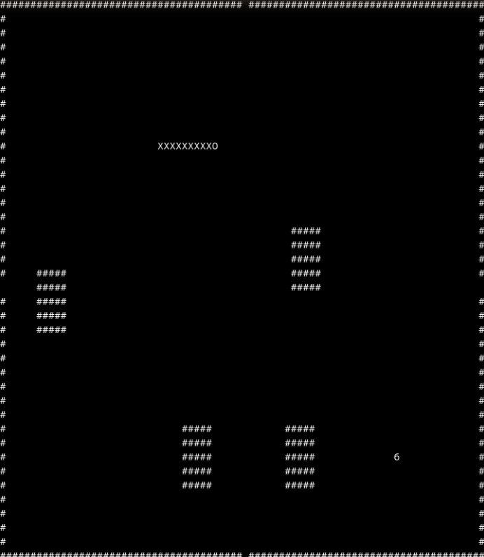
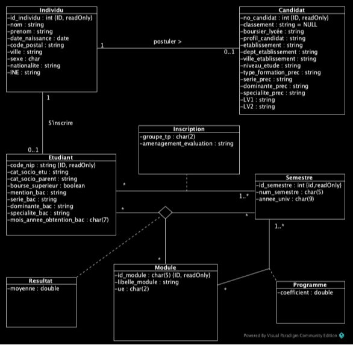

üöÄ Projets r√©cents
Snake Dans Le Terminal
Programmation d'un jeu de "Snake" en langage C dans le terminal.
Création Base De Données
Création d'une base de données à partir d'un diagramme UML puis analyse et calculs dessus.
Jeu de la Vie
Implémentation en Python du célèbre automate cellulaire de Conway.
Convertisseur Devise
Application JS simple qui récupère les taux en temps réel via API.